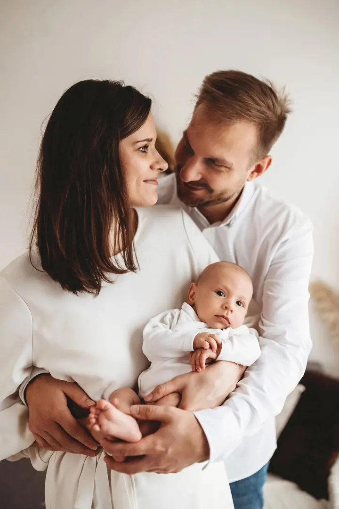
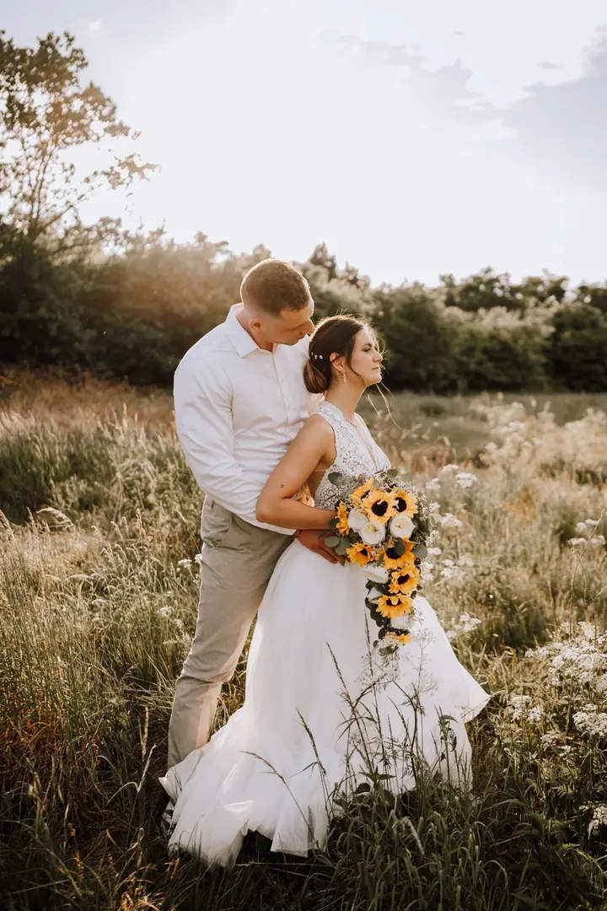
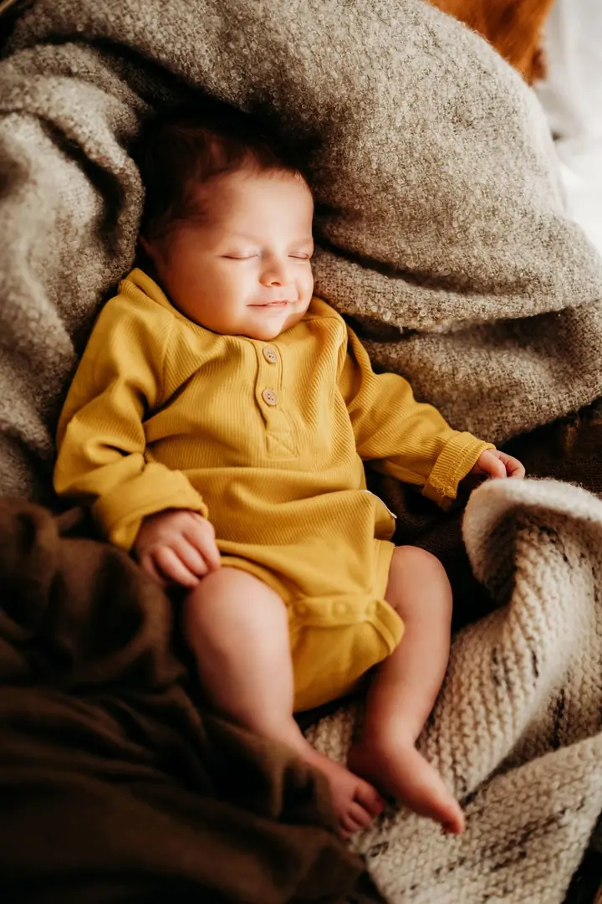

Rodinné focení
Focení celé rodiny, od miminek po sourozence, doma nebo v přírodě. Klidné a přirozené fotky, ke kterým se budete rádi vracet.

Jmenuji se Kateřina Bábíčková a fotím rodiny, svatby i zamilované páry. Mám ráda měkké světlo, teplé tóny a chvíle, kdy se přestanete hlídat a jste prostě sami sebou.
Rezervovat termínJmenuji se Kateřina Bábíčková a nejčastěji fotím rodiny. Miminka zabalená v dekách, sourozence v náručí maminky, rodiče, kteří se na sebe usmívají nad svým dítětem. Právě tyhle obyčejné a přitom vzácné chvíle mě na focení baví nejvíc.


Kromě rodin fotím svatby, páry a portréty. Ráda pracuji venku v polích, vinohradech a v podvečerním světle, ale stejně tak u okna se závěsem a pár sušenými trávami. Fotky ladím do jemných, zemitých barev, aby působily klidně a vydržely roky.
Nejaktuálnější tvorbu najdete na mém Instagramu. Pokud plánujete svatbu, napište mi přes formulář, ráda vám potvrdím volné termíny.
Co fotím
Focení celé rodiny, od miminek po sourozence, doma nebo v přírodě. Klidné a přirozené fotky, ke kterým se budete rádi vracet.
Doprovodím vás svatebním dnem a nafotím ho tak, jak ho prožíváte. Volné termíny vám ráda potvrdím přes kontaktní formulář.
Portrétní focení v ateliérovém světle i venku, jemné i odvážnější. Chci, abyste se na fotkách poznali a cítili se na nich dobře.
Společné focení pro dva, ať už jste spolu chvíli, nebo čekáte miminko. Hodně blízkosti a málo strojeného pózování.
Postup
Přes formulář mi pošlete, o jaké focení máte zájem a kdy by se vám hodilo. U svateb vám rovnou potvrdím, jestli mám termín volný.
Probereme místo, čas a počet lidí. Poradím, co si vzít na sebe, aby fotky ladily.
Fotíme v klidu a bez spěchu, venku nebo v interiéru. Nebudu po vás chtít strojené pózy, spíš vás navedu a nechám být.
Vyberu a upravím ty nejpovedenější snímky v mém stylu a pošlu vám je v online galerii.
Otázky
Rodinné focení začíná na 2 500 Kč, portréty také od 2 500 Kč a párové focení od 2 000 Kč. Aktuální ceny vám ráda pošlu.
Ano, svatební focení začíná na 6 000 Kč. Kvůli volným termínům mi prosím napište přes formulář na webu.
Fotím venku v přírodě i v interiéru. Místo vybereme společně podle toho, co vám bude příjemné a jaké fotky si přejete.
Nejlépe jednoduché oblečení v jemných a přírodních barvách, ve kterém se budete cítit pohodlně. Před focením vám ráda poradím.